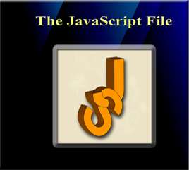
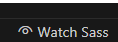
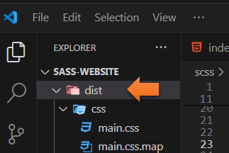
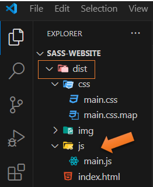
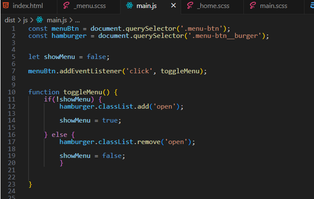
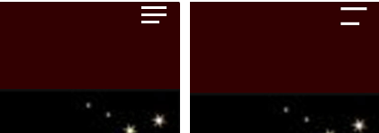
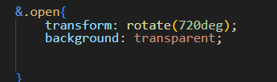
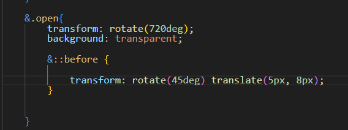
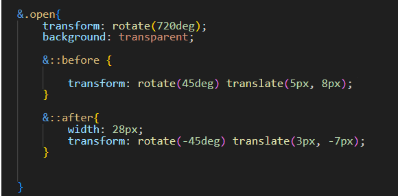

~7 The JavaScript File~
8/19/2024
Set up for the Java Script file
To turn the two bars into an X
Go Here for the Code for this Tutorial

Turn on Sass
In Visual Studio
Remember to turn on your Watch Sass

Set up for the Java Script file
You want to open up the dist folder, in the side bar, on the left of the Visual Studio App.

Create another folder inside of the dist folder, and name it js. Make sure it is actually in the dist folder
Inside of the js folder create a file and name that main.js.

Writing the Java Script file
We will start by targeting the document object model (DOM). The DOM represents the web page, and it is a way in code (or rather Java Script) in this situation, where we can make changes to the document structure, style and content. The DOM represents the document as nodes and objects, and in this way the Java Script language can use it to interact, or talk to the page.
- Set some constants
- Menu initially in code invisible
- Add, and remove event listener to toggle menu visibility
You can think of this classlist as a type of tree. We want to either add or remove branches to it. If the menu is not showing we want to add a class that will open the menu. If the menu is open, we want to remove that class or branch from our tree. So, that the menu will close. These little branches in programing are actually referred to as nodes.
const menuBtn = document.querySelector('.menu-btn');
const hamburger = document.querySelector('.menu-btn__burger');
let showMenu = false;
menuBtn.addEventListener('click', toggleMenu);
function toggleMenu() {
if(!showMenu) {
hamburger.classList.add('open');
showMenu = true;
} else {
hamburger.classList.remove('open');
showMenu = false;
}
}

Test index page
Go to the index.html file to test it
Make sure you are actually clicking on the Hamburger menu to test it.
With the Java Script code in place, when you click the hamburger menu, it should spin around and the middle bar of the menu should disappear, or become transparent

To turn the two bars into an X
Go into the _menu.scss file, and go in where it says &.open

We want to make this change to it. Here we will target those pseudo elements. Remember where we created that top and bottom bar by using ::before, and ::after.
translate: the first argument represents the horizontal first bar, and the second argument will be the vertical bar.

When we click the hamburger menu on the webpage, you will see it looks like this
So, it is not quite an X quite yet, but we are working on it.
Target the ::After
Now remember the bottom line is actually set to a shorter width, but in order for it to look like an X, we will need to change it to the same width. You might have to play around with the numbers here to get it to work.
&.open{
transform: rotate(720deg);
background: transparent;
&::before {
transform: rotate(45deg) translate(5px, 8px);
}
&::after{
width: 28px;
transform: rotate(-45deg) translate(3px, -7px);
}
}

With this set like this, it should now look like this, when you click it.

Go Here for the Code for this Tutorial